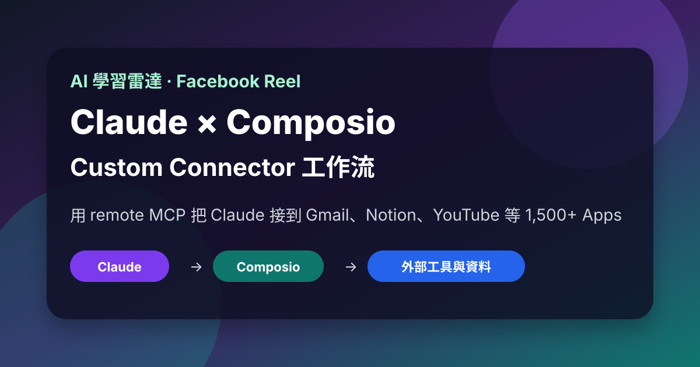
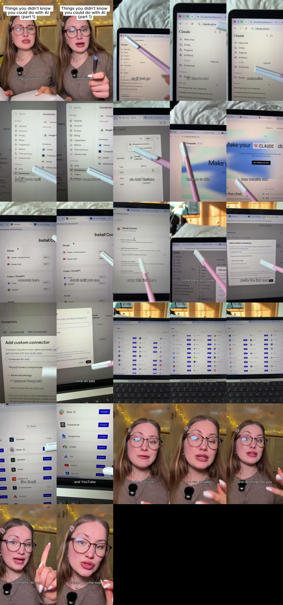

Facebook｜Buildingwmaria：用 Composio Custom Connector 把 Claude 接到 1,500+ Apps

一句話摘要
這支 Reel 的核心是：用 Claude 的 Custom Connector / remote MCP 功能，把 Composio 接進 Claude，讓 Claude 能透過 Composio 操作外部 App。它很適合作為 AI agent 從「聊天助手」進入「可執行工作流代理」的入門案例，但也必須加上權限控管、資料安全與人工審核。
來源脈絡
| 欄位 | 內容 |
|---|---|
| 原始連結 | https://www.facebook.com/reel/1562247731950619 |
| Canonical URL | https://www.facebook.com/61593005426180/videos/this-is-actually-insaneclaude-aitools-designtools-aitoolsfordesign-composiopartn/1562247731950619/ |
| 作者 | Buildingwmaria |
| Reel ID | 1562247731950619 |
| 影片長度 | 約 27 秒 |
| OpenGraph 顯示 | 約 67 萬次觀看、8,102 個心情、4,427 則留言、758 次分享 |
| yt-dlp 擷取觀看數 | 約 311,021（Facebook 計數會因快取、地區與端點而不同） |
| Caption | `This is actually insane🤯 #claude #aitools #designtools #aitoolsfordesign #composiopartner` |
Reel 畫面與流程
影片標題是「Things you didn't know you could do with AI, part 1」。畫面中先打開 `claude.ai/new`，從 Claude 左側選單進入 Customize，再進入 Connectors，按 Add / Add Custom Connector。
接著切到 Composio 的個人頁或連接頁，畫面可見：
- Composio / For You 頁面；
- Claude + Claude Cowork、Claude Code、Codex + ChatGPT、Cursor 等安裝選項；
- Claude Cowork 設定畫面中可見 MCP server URL：`https://connect.composio.dev/mcp`；
- 回到 Claude 的 Add custom connector 視窗，名稱填入 `Composio for you`，URL 貼上 `https://connect.composio.dev/mcp`；
- 連接後的 Composio App 清單可見 Gmail、Notion、Supabase、Twitter/X、HubSpot、Slack、Perplexity AI、Google Docs、Airtable、Jira、YouTube、Bitbucket 等。

逐字稿重點
Whisper 逐字稿中把 Claude 誤聽成 Cloud、Composio 誤聽成 composure，但語意與畫面一致：
> Things you didn't know you could do with AI, part one. So if you go to Claude, and then click on Customize, scroll down until you see Connectors, and then click on Add Custom Connector. Then go to this free website and create account here, scroll until you see Claude, and then copy this link here. Come back to Claude, paste it here, name it Composio, and then click on Add. And just like that, you would have connected your Claude to over 1,000 apps, like Gmail, Notion, and YouTube. This means that instead of just talking to Claude, you can actually make it go out and do things for you. Comment AI and I’ll send you the tool.
官方來源交叉驗證
### Claude custom connectors / remote MCP
Anthropic Help Center 說明，Claude、Cowork、Claude Desktop 在 Free、Pro、Max、Team、Enterprise 方案都支援 custom connectors using remote MCP；Free users 限一個 custom connector。Custom connectors 可讓 Claude 連接遠端 MCP server，與外部工具和資料來源互動。
官方文件同時提醒：custom connectors 可能連到非 Anthropic 驗證的服務；一旦連上，Claude 可能存取那些服務並採取行動，所以需要檢查安全與隱私。
來源：https://support.claude.com/en/articles/11175166-get-started-with-custom-connectors-using-remote-mcp
### Composio
Composio 官方頁將產品定位為把 AI 接到日常工具的平台，頁面明確寫到可連 Linear、Slack、Gmail、Figma 等工具，並主打「1,500+ apps」。它的安全區塊也強調 guardrails、control access、agents never see your passwords、privacy first。
來源：https://composio.dev/for-you
Composio 文件也提供 MCP 使用方式，包含建立 MCP server、產生 user URLs、讓使用者先完成工具授權，以及在 AI provider 端使用 MCP server URL / headers。
來源：https://docs.composio.dev/docs/single-toolkit-mcp
為什麼值得收進 AI 學習雷達
- 這是 remote MCP / custom connector 對一般使用者最直觀的展示：不需要寫完整 bot，就能把 Claude 變成多 App 工作流入口。
- Composio 類工具正在把「App 整合、OAuth、工具清單、權限管理」包裝成 agent 可用的中介層。
- 對教學與企業導入來說，這可延伸到：Gmail 摘要與回覆草稿、Notion 知識庫整理、YouTube 研究清單、Slack 專案更新、Airtable / Jira 任務同步等。
- 這與近期 Meta Ads MCP / Krea MCP 案例相呼應：MCP 正從工程師工具逐步進入設計、行銷、內容、辦公自動化場景。
實務導入檢核表
- 先建立專用測試帳號或低權限帳號，不要一開始接主帳號。
- OAuth 授權時逐項檢查 scopes，能 read-only 就不要給 write/delete。
- 讓 Claude 先產生草稿、摘要、待辦與建議，不要直接寄信、刪資料、改投放、改 CRM。
- 對 Gmail、Slack、Notion、Drive、CRM 這類含個資或商業機密的工具，建立紅線：不可把客戶資料、token、未公開財報、名單或合約貼到不可信環境。
- 每次新增 MCP connector 都要記錄：供應商、URL、OAuth 權限、可用工具、是否有寫入能力、撤銷授權位置。
- 若用於團隊或課程示範，建議只示範 sandbox 資料與假資料。
風險與限制
- Reel 的「over 1,000 apps」與 Composio 官方頁的「1,500+ apps」屬於平台宣稱；實際可用 app、可用 actions 與成功率取決於 Composio 當下支援與使用者授權。
- Claude remote MCP 的可用性會受方案、地區、組織政策與 connector 限制影響。
- 這不是「AI 可以任意安全地操作所有帳號」；越多 app 串接，越需要最小權限、審計紀錄與人工 approval。
- 「comment AI and I’ll send you the tool」是留言導流 CTA；本條目只保存公開可見流程與官方來源，不保存私訊或留言後才取得的未公開內容。
原始連結
Facebook Reel：
https://www.facebook.com/reel/1562247731950619
Composio for you：
Composio MCP 文件：
https://docs.composio.dev/docs/single-toolkit-mcp
Claude custom connectors：
https://support.claude.com/en/articles/11175166-get-started-with-custom-connectors-using-remote-mcp